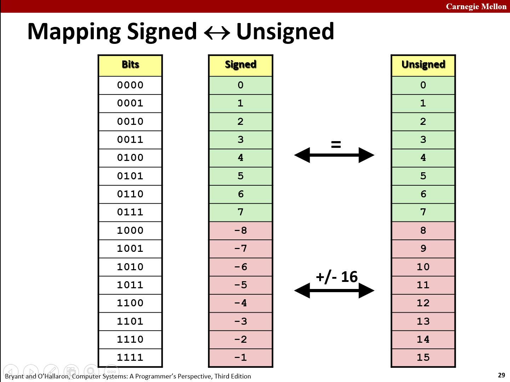
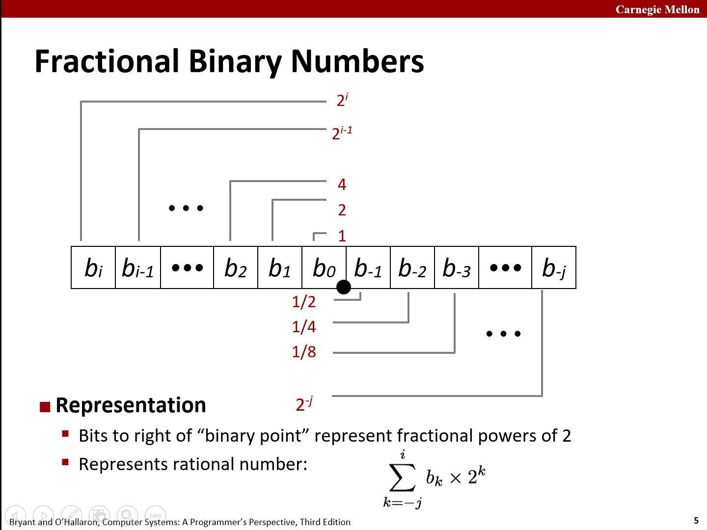
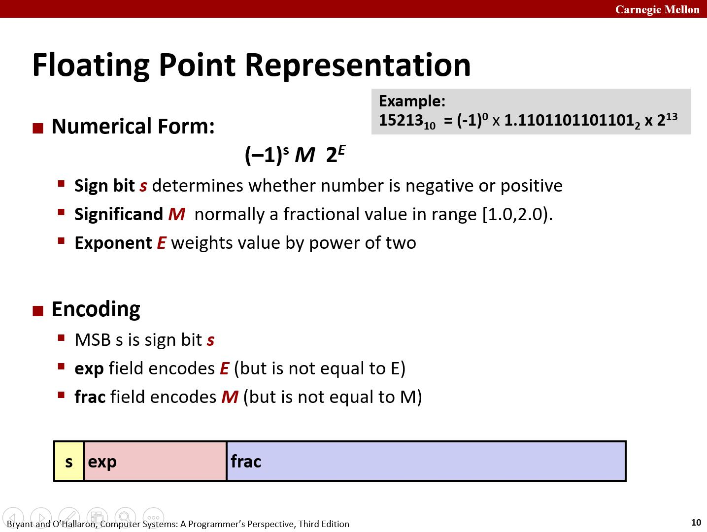
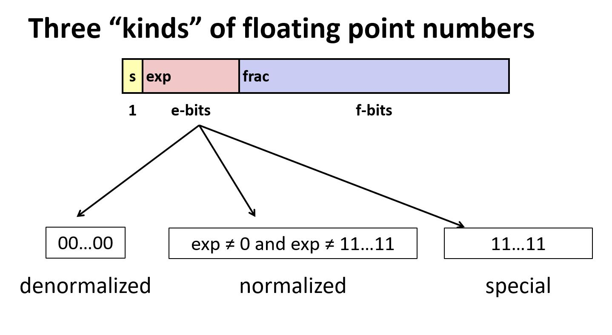
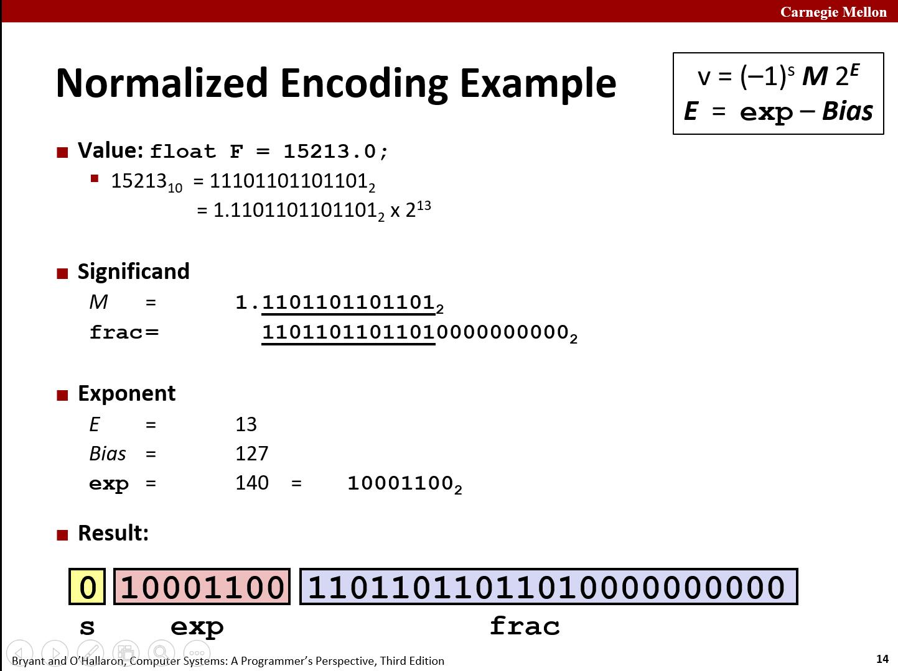
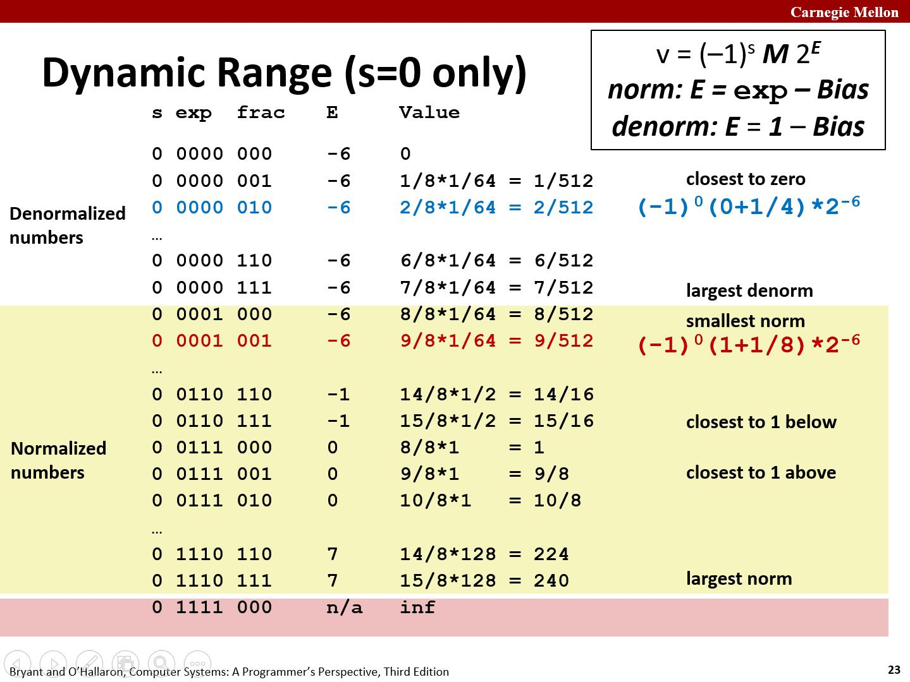
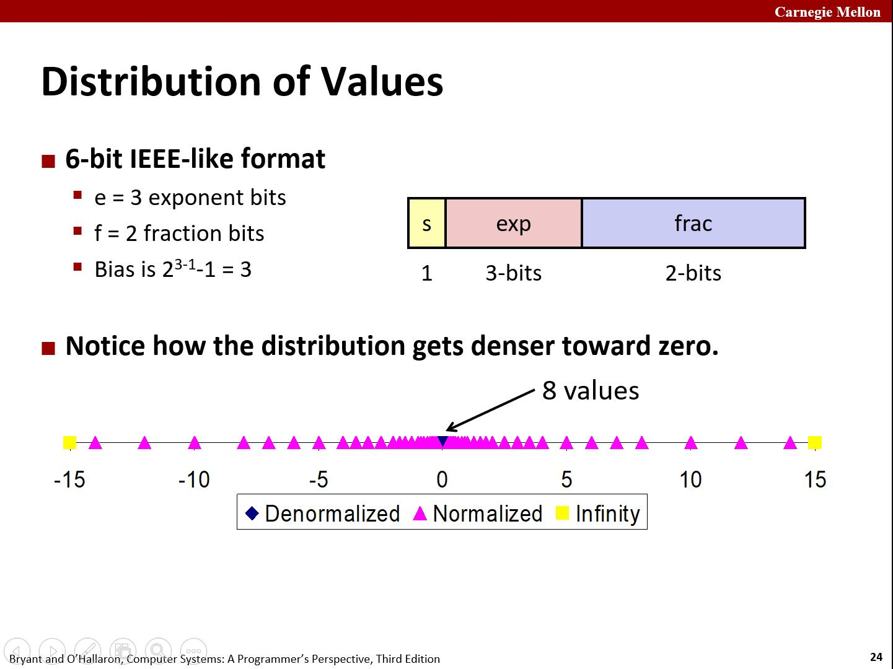
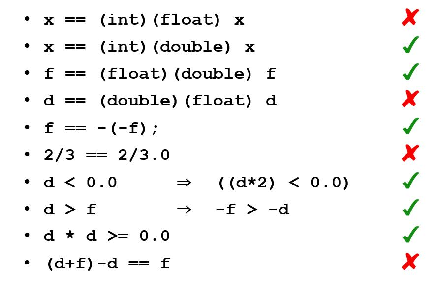

在 CSAPP 正式部分的第一章，作者重点向我们介绍了硬件层面的数据存储、处理的基本概念，整数、浮点数的编码规则，运算的规则与性质。
信息的表示方法
在小时候浅薄地接触计算机世界的时候，有这样一个概念：“一切信息都是表示为二进制的”。具体来说，机器级程序本身就是一个字节序列，采用底层的、由二进制编码的指令集；而各类的数据，通过对应的编码规则，也由二进制表示。
计算机中，使用 8 个位（bit）的块，或者字节（byte），作为最小的可寻址的内存单位，而不是访问内存中单独的位。二进制程序将内存视作一个非常大的字节数组，成为虚拟内存（virtual memory）。内存的每个字节都由一个唯一的数字标识，称作它的地址（address）。
虚拟地址空间只是一个呈现给二进制程序的概念性映像，将物理内存在更高层级映射到虚拟内存的过程是将硬件和操作系统软件结合起来实现的。这一点提醒我们，平常谈到的内存往往指的是虚拟内存，它的完整功能并不是全部直接由硬件本身提供的。
字长
每台计算机都有一个字长（word size），指明指针数据的标称大小（nominal size）。因为虚拟地址是以这样的一个字来编码的，所以字长决定的最重要的系统参数就是虚拟地址空间的最大大小。
具体来说，对于一台字长为 $w$ 位的机器而言，虚拟地址的范围就是 $0$ ~ $2^w-1$，程序最多访问 $2^w$ 个字节。
32位字长限制虚拟地址空间为 $4 GB$，拓展到 64 位字长使得虚拟地址空间为 $16 EB$，大约是 $1.84 * 10^{19}$ 字节。
| C Data Type | Typical 32-bit | Typical 64-bit | x86-64 |
|---|---|---|---|
| char | 1 | 1 | 1 |
| short | 2 | 2 | 2 |
| int | 4 | 4 | 4 |
| long | 4 | 8 | 8 |
| float | 4 | 4 | 4 |
| double | 8 | 8 | 8 |
| pointer | 4 | 8 | 8 |
上面的表给出了基本 C 数据类型所占的字节数的典型大小。
C 语言标准没有规定 int， long 等类型变量的字节数，这导致了一些程序可移植性的问题。为了避免由于依赖“典型”大小和不同编译器设置带来的奇怪行为，ISO C99 引入了一类数据类型，其数据大小是固定的，不随编译器和机器设置而变化。其中有 int32_t，int64_t，它们分别为 4 个字节和 8个字节。
寻址与字节顺序：大小端
对于占据多字节空间的程序对象，它在内存中的实际表示由两点所决定：这个对象的地址，以及这个对象在内存中的排列。
多字节的对象被存储为连续的字节序列，而对象的地址为其所使用的字节的最小的地址。例如，假设一个 int 类型的变量 x 的地址为 0x0100，那么 x 的四个字节将被存储在：
0x0100、0x0101、0x0102、0x0103
这四个连续的位置，这与我们一般的认识相符。
在连续的字节中排列表示一个对象的字节有两种通用的规则。考虑一个 $w$ 位的整数，假设 $w$ 是 8 的倍数，那么这些位就能被分组成为字节。把数据按照从最高字节到最低字节的顺序存储的方式叫做大端法（big endian）；而从最低字节到最高字节存储的方式叫做小端法（little endian）。
举例说明：
假设有 int 类型变量 x，位于地址 0x0100 处，它的 16 进制值位 0x01234567。地址范围 0x0100 ~ 0x0103的字节顺序依赖于机器的类型：
大端法
| 0x0100 | 0x0101 | 0x0102 | 0x0103 | ||
|---|---|---|---|---|---|
| …… | 01 | 23 | 45 | 67 | …… |
小端法
| 0x0100 | 0x0101 | 0x0102 | 0x0103 | ||
|---|---|---|---|---|---|
| …… | 67 | 45 | 23 | 01 | …… |
大多数 Intel 机器都只采用小端模式。
在 C 层级的编程中，大小端的特性几乎不会直接暴露给程序员，机器所使用的字节顺序是完全不可见的，可能与这一特点有关的有三种情况。
在网络数据传输时。 如果对不同机器的大小端特性不进行区分，数据信息的处理将发生错误。网络应用程序的代码编写必须遵守已经建立的，关于的字节顺序的规则，在数据发出前，数据接收后进行可能的转换。
直接阅读字节级别的整数数据时。 举例来说，从某个文件中摘除了下面这行代码，该文件给出了一个针对 Intel x86-64 处理器的机器级代码的文本表示：
4004d3: 01 05 43 0b 20 00 add %eax,0x200b43(%rip)
这一行是由反汇编器（disassembler）生成的。
这时，偏置量 D 的表示就是小端的。
编写规避正常的类型系统的程序时。 在 C 语言中，可以通过强制类型转换（cast）或联合（union）来允许以一种数据类型引用一个对象，而这种数据类型与创建这个对象时定义的数据类型不同。大多数应用编程都不推荐这种编码技巧，但是它们对系统及变成来说是非常有用，甚至是必须的。
1
2
3
4
5
6
7
8
9
10
11
12
13
14
15
16
17
18
19
20
21
22
typedef unsigned char *byte_pointer;
void show_bytes(byte_pointer start, size_t len){
size_t i;
for (i = 0; i < len; i++)
printf(" %.2x", start[i]);
printf("\n");
}
void show_int(int x){
show_bytes((byte_pointer) &x, sizeof(int));
}
void show_float(float x){
show_bytes((byte_pointer) &x, sizeof(float));
}
void show_pointer(void *x){
show_bytes((byte_pointer) &x, sizeof(void *));
}函数
show_int，show_float和show_pointer展示了如何分别输出类型为int、float和void *的 C 程序对象的字节表示。可以观察到它门仅仅传递给show_bytes一个指向它们参数x的指针&x，且这个指针被强制类型转换为unsigned char *。这种强制类型转换告诉编译器，程序应该把这个指针看成一个指向“字节序列”，而不是原始数据类型的对象。这些过程使用 C 语言的运算符 sizeof 来确定对象使用的字节数。一般来说，表达式
sizeof(T)返回存储一个类型为 T 的对象所需要的字节数。使用 sizeof 而不是一个固定的值，是向编写在不同机器类型上可移植的代码迈进了一步。
移位运算
C 语言提供了一种移位运算，向左或者向右移动位模式。
C 表达式 x << k 会生成一个值：将 $x$ 向左移动 $k$ 位，丢弃掉最高的 $k$ 位，并在右端补 $k$ 个0。自然地，如果整数有 $w$ 个二进制位，那么移位量 $k$ 应该是一个 $0 ~ w-1$ 之间的值。移位运算还是从左至右可结合的，即： x << j << k 等价于 (x << j) << k 。
有左移运算，自然有与之对应的右移运算x >> k，但是机器支持两种方式的右移：逻辑右移和算术右移。
逻辑右移直接在左端补 $k$ 个 0，而算术右移在左端补 $k$ 个最高有效位的值。
算术右移的做法看起来有些奇特，但是它对于有符号整数的运算非常有用，下面是一个例子。
| 操作 | 值 |
|---|---|
| 参数 x | [01100011] [10010101] |
| x << 4 | [00110000] [01010000] |
| x >> 4 (逻辑右移) | [00000110] [00001001] |
| x >> 4 (算术右移) | [00000110] [11111001] |
C 语言没有规定对于有有符号数应该使用哪种类型的右移，但是几乎所有编译器/机器组合都对有符号数使用算术右移，且许多程序员都假设机器会使用这种右移。另一方面，对于无符号数，右移必须是逻辑的。
整数表示
首先是无符号数的编码，假设一个整数数据类型有 $w$ 位，我们可以将位向量写成 $\vec{x}$ ，表示整个向量。
对于向量 $\vec{x}$ ：
$$
B2U_w(\vec{x}) = \sum_{i=0}^{w-1}x_i2^i
$$
无符号数的表示法是一个双射，$0 ~ 2^w-1$ 的共 $2^w$ 个整数都唯一地对应一个编码。
对于有有符号数的编码，共有方式：补码，反码，原码。绝大多数的计算机采用补码表示法（Two-complement)。在这个定义中，将最高位解释为负权。
对于向量 $\vec{x}$ ：
$$
B2T_w(\vec{x})=-x_{w-1}2^{w-1}+\sum_{i=0}^{w-2}{x_i2^i}
$$
补码表示法也是一个双射。
首先来分析补码表示法能表示的最大、最小，以及一些特殊值，以 $w=4$ 为例。
$$
B2T_4([0000])=0_{10}
$$
$$
B2T_4([1000])=-1*2^{4-1}+0=-8_{10}
$$
$$
B2T_4([0111])=0+\sum_{i=0}^{4-2}{2^i}=1+2+4=7_{10}
$$
$$
B2T_4([1111])=-8+1+2+4=-1_{10}
$$
每位均为 0，表示 0，这一点是自然的；
最高位为 1，其它位均为 0，表示最小值：$-2^{w-1}$；
最高位为 0，其它位均为 1，表示最大值：$2^{w-1}-1$；
每位均为1，表示 -1，加上一个正数溢出后从 0 开始重新记数，这也是自然的。
下面以一个例子再做说明：
x = 15213: 00111011 01101101
y = -15213: 11000100 10010011
类型转换
C 语言允许在各种不同类型之间进行显式或隐式的类型转换，从转换规则设计的角度，我们可以这样去思考：对于在两种形式中都能表示的数值，要求保持不变；另一方面，如果要这个数在新类型中无法表示，我们还需要设计一套规则。
考虑下面的代码：
1 | short int v = -12345; |
在补码的机器上，上述代码会产生如下的输出：
v = -12345, uv = 53191
我们看到，有无符号整数之间的强制类型转换的结果保持位值不变，只是改变了解释这些位的方式。

浮点数
浮点的意思是对形如 $V=x*2^y$ 的有理数进行编码，这是对于实数的一种近似表示。浮点数对执行非常大的数字、非常小（接近于 0）的数字，以及更普遍的作为实数运算的近似值的计算，是很有用的。
直到 20 世纪 80 年代，每个计算机制造商都设计了自己的浮点数标准，以及运算的细节。另外，它们不太关注运算的准确性，而把实现的速度和简便性看得更重要。
在 1985 年，这些情况随着 IEEE 754 标准的推出而改变了，这是一个设计精妙的表示浮点数及其运算的标准。目前，所有的计算机都支持后来这个被称为 IEEE 浮点的标准。
二进制小数
类似十进制小数，考虑一个形如
$$
b_mb_{m-1}…b_1b_0.b_{-1}b_{-2}…b_{-(n-1)}b_{-n}
$$
的表示法，其中每一个位的取值范围是 $0$ 和 $1$。这种表示方法所表示的数定义如下：
$$
b=\sum_{i=-n}^{m}{2^i*b_i}
$$

仅考虑有限位数的编码，那么十进制表示法无法精确表达像 $\frac{1}{3}$ 和 $\frac{5}{7}$ 这样的数。类似，二进制小数也只能表示那些能够被写成 $x*2^y$ （其中 $x,y$ 是整数）的数。其他的值都只能近似地表示。增加位长可以提高精度。
IEEE 浮点
上面提到的定点表示法不能很有效地表示非常大的数字。例如，表达式 $5×2^{100}$ 是用 $101$ 后面跟随 $100$ 个零的位模式来表示的。相反，我们希望通过给定 $x,y$ 来表示形如 $x×2^y$。
IEEE 浮点标准用 $V=(-1)^s×M×2^E$ 的形式来表示一个数：
- 符号（sign）：$s$ 决定这个数是负数（$s=-1$) 还是正数（$s=0$），而对于数值 $0.0$ 的符号位解释为特殊情况处理。
- 尾数（significand）：$M$ 是一个二进制小数，它的范围是 1 ~ 2 - $\epsilon$，或者是 0 ~ 1 - $\epsilon$。
- 阶码（exponent）：$E$ 的作用是对浮点数加权，实际上就是在表示小数点的位置，也就是“浮点”。

给定位表示，根据 exp 的值，被编码的值可以分成三种不同的情况。

情况 1：规格化的值（Normalized value）
这是最普遍的情况，当 exp 的位模式既不全为 0（数值 0），也不全为 1 （对于单精度浮点数 float，数值为 255）时，都属于这类情况。
在这种情况中，阶码 exp 字段被解释为以偏置（biased）形式表示的有符号整数。也就是说，阶码的值是 $E=e-Bias$。其中 $Bias$ 是一个等于 $2^{k-1}-1$ 的偏置量，对于单精度浮点数是 127，而双精度是 1023。
小数字段 $frac$ 被解释为描述二进制小数值 $f$，由于二进制表示的最高位肯定是 1（implied leading 1），我们就不必对这个最高位进行编码，这样的处理获得了一个额外精度位。
情况 2：非规格化的值（Denormalized value）
当阶码域全为 0 的时候，所表示的数是非规格化的。在这种情况下，阶码值是 $E=1-Bias$，而尾数的值是 $M=f$，也就是直接编码，不再包含隐含的开头的 1。
非规格化的数可以用来表示很接近零的数，由于所有的非规格数的阶码值都是一样的，所以它们在零的附近分布是完全均匀的的，即：相邻的两个非规格化浮点数之间的距离都是一致的。
此外，考虑从最大的非规格数到最小的规格数的“过渡过程“，将阶码值设置为 $1-Bias$ 提供了一种平滑的方式过渡。
情况 3：特殊值
最后一类数值是当阶码全为 1 的时候出现的。
当小数域全为零，得到的值表示无穷，当 $s=0$ 时是 $+\infty$，当 $s=1$ 时是 $-\infty$。当我们把两个非常大的数相乘，或者除以非常小的数的时候，无穷可以表示浮点溢出的结果。
当小数域非零时，结果数值被称为 $NaN$，即”不是一个数字“（Not a Number）的缩写。一些运算的结果不能是实数或无穷，就会返回这样的 $NaN$ 值，比如当计算 $\sqrt{-1}$ 或 $\infty-\infty$ 时。

上图是一个典型情况，规范型浮点数。
浮点数的“值域”


我们直观地看到，浮点数在原点的附近分布密集，远离原点的地方分布稀疏。事实上，这是由于在不同阶码下，$frac$ 区域加 1 变化的值不同而导致的。
浮点运算律与类型转换
int，float，double之间进行的类型转换改变位表示。float，double到int的转换截断小数部分，类似于“向 0 舍入”。int→double的转换是精确的，这是由于double有 53 个 $frac$ 位。int→float的转换可能是不精确的，需要舍入，这是由于float只有 23 个$frac$ 位。浮点运算不是结合的，也不是交换的，采用从左到右的方式计算表达式，考虑这个例子：
1
2float a = 3.14 + 1e20 - 1e20; // a = 0.0f, rounding
float b = 3.14 + (1e20 - 1e20); // b = 3.14f